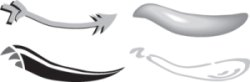
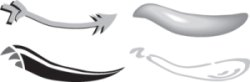
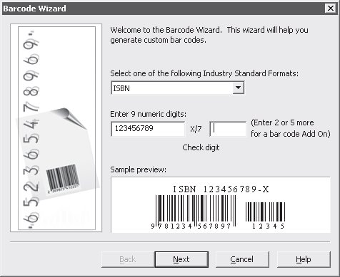

Лекция 5: Создание объектов
Инструменты рисования кривых
В группе Curve (Кривая) собраны инструменты для рисования кривых произвольной формы
Freehand (Кривая)
Инструмент Freehand (Кривая) позволяет рисовать кривые произвольной формы. Существует два способа рисования. Первый заключается в том,чтобы нажать левую кнопку мыши и, не отпуская ее, перемещать указатель по странице документа. После того как кнопка будет отпущена, появится кривая, форма которой будет повторять траекторию указателя. Точность, с которой кривая соответствует траектории, задается в поле Freehand Smoothing (Сглаживание кривой), расположенном в правой части панели свойств.
Второй способ позволяет рисовать прямые. Первый щелчок мыши задает начальную точку отрезка, второй — конечную.
Bezier (Кривая Безье)
Каждый щелчок этим инструментом создает узел кривой Безье "Выделение и редактирование объектов" . Однократный щелчок приводит к созданию прямого узла. Если после щелчка не отпускать кнопку мыши, а переместить указатель, появится не только узел, но и его направляющие
Artistic Media (Художественные средства)
У этого инструмента пять режимов, позволяющих создавать необычные графические эффекты обводки. Выбрать один из режимов можно, активизировав инструмент Artistic Media (Художественные средства) и щелкнув на соответствующей кнопке в левой части панели свойств.
Режим Presets (Заготовки)
Режим заготовок позволяет рисовать кривые заданного профиля, то есть изменяющие толщину обводки по определенному закону.
Первый параметр на панели свойств уже рассматривался выше — это сглаживание кривой.
В поле вводится толщина кисти инструмента, а в раскрывающемся списке можно выбрать одну из заготовок кисти.
Режим Brush (Кисть)
Используя этот режим инструмента Artistic Media (Художественные средства),можно нарисовать линию, вдоль которой будет растянут определенный графический объект (рис. 5.1).
На панели свойств настроек, описанных для режима Presets (Заготовки) есть еще три параметра.
 

Рис. 5.1. Примеры применения режима Brush (Кисть) инструмента Artistic Media(Художественные средства)
Режим Sprayer (Распылитель)
В этом режиме инструмент Artistic Media (Художественные средства) "распыляет" объекты вдоль создаваемой кривой (рис. 5.2).
Рис. 5.2. Примеры применения режима Sprayer (Распылитель)
Помимо перечисленных выше, на панели свойств содержатся следующие параметры.
Size of Object(s) to be Sprayed (Размер распыляемых объектов) — степень уменьшения или увеличения объектов по сравнению с заготовкой.
Choice of spay order (Порядок следования) — объекты заготовки могут следовать в случайном порядке (Randomly), последовательно, как они были заданы,(Sequentially) или в зависимости от направления (By Direction).
Add to Spraylist (Добавить в список распыляемых объектов) — отредактированный вариант эффекта добавляется в список объектов для распыления.
Spraylist Dialog (Диалоговое окно распыляемых объектов).
Dabs/Spacing of Objects to be Sprayed (Густота/Промежуток между распыляемыми объектами).
Rotation (Поворот) — поворот объектов вокруг своей оси.
Offset (Смещение) — расположение распыляемых объектов по одну или по обе стороны от кривой.
Reset Values (Восстановить исходные параметры).
Режим Calligraphic (Каллиграфический)
В этом режиме имитируется рисование каллиграфическим пером — толщина линии зависит от угла, под которым она рисуется (рис. 5.3).
Рис. 5.3. Примеры рисования каллиграфическим пером
На панели свойств в этом режиме всего три параметра, из которых новым для нас является только один — угол наклона виртуального каллиграфического пера Callihraphic Angle (Угол наклона).
Режим Pressure (С нажимом)
Позволяет изменять толщину рисуемой линии в зависимости от степени нажатия на перо графического планшета.
Pen (Перо)
Рисование пером очень напоминает рисование инструментом Bezier (Кривая Безье) по принципу "узел за узлом". Для окончания работы с инструментом Pen (Перо) нужно дважды щелкнуть левой кнопкой мыши. Если на панели свойств нажата кнопка, то есть включен режим Preview Mode (Режим просмотра), то в процессе рисования вы будете видеть, как себя ведут создаваемые сегменты кривой. Если нажать кнопку, то можно будет не только рисовать линию, но и добавлять или удалять на ней узлы.
Polyline (Сложная линия)
Можно сказать, что инструмент рисования кривых Polyline (Сложная линия) — это Pen (Перо) в режиме Preview Mode (Режим просмотра).
3 Point Curve (Кривая по трем точкам)
Позволяет рисовать кривые не совсем привычным способом: в точке, в которой вы нажимаете левую кнопку мыши, создается начальный узел, в точке, где кнопка отпускается, — конечный, а место повторного щелчка определяет изгиб дуги.
Interactive Connector (Интерактивная соединительная линия)
Соединяет две фигуры прямой или ступенчатой линией. Если после этого преобразовать любой из объектов, к которому проведена такая соединительная линия, то она изменится вместе с объектом.
Dimension (Размерные линии)
Позволяет нарисовать выносные размерные линии. Очень удобный инструмент для тех, кто рисует в CorelDRAW чертежи.
Smart Drawing (Умная кисть)
Инструмент, появившийся в CorelDRAW 12. На палитре инструментов он расположен под группой Curve (Кривая).
Позволяет быстро и просто рисовать ровные геометрические фигуры за счет упрощения и сглаживания контура (рис. 5.4).
Этот инструмент очень помогает начинающим пользователям, обратите на него особое внимание.
Рис. 5.4. Контур в процессе рисования инструментом Smart Drawing (Умная кисть) (слева) и результат после окончания рисования (справа)
5.2. Группа Rectangle (Прямоугольник)
В группе Rectangle (Прямоугольник) находятся два инструмента для рисования прямоугольников — Rectangle (Прямоугольник) и 3 Point Rectangle (Прямоугольник по трем точкам).
Опишем эти инструменты.
Rectangle (Прямоугольник)
Принцип использования инструмента Rectangle (Прямоугольник) интуитивно понятен. Единственное, о чем стоит упомянуть особо, — это применение клавиатуры при рисовании. Если использовать инструмент Rectangle (Прямоугольник) с нажатой клавишей Ctrl, то получатся квадраты, а если с клавишей Shift, то прямоугольник будет создаваться из центра.
3 Point Rectangle (Прямоугольник по трем точкам)
Инструмент 3 Point Rectangle (Прямоугольник по трем точкам) позволяет создавать прямоугольники необычным способом: место, где кнопка мыши нажата, и место, в котором она отпущена, определяют координаты противоположных вершин прямоугольника.
Для прямоугольников, созданных любым способом, можно установить радиус закругления углов. Для этого достаточно переместить угловую точку фигуры или изменить значения в соответствующих полях на панели свойств.
Независимо от способа создания прямоугольники являются особыми фигурами CorelDRAW, которые не редактируются по правилам кривых Безье. Например, на них нельзя добавить или удалить узел, а также изменить тип сегмента. Преобразовать прямоугольник в обычную кривую Безье можно командой Arrange \Rightarrow Convert to Curves (Расположение \Rightarrow Преобразовать в кривые).
5.3. Группа Ellipse (Эллипс)
Инструменты этой группы по способу применения схожи с инструментами рисования прямоугольников, но служат для создания эллипсов и окружностей, а так-же дуг и секторов.
По умолчанию при использовании Ellipse (Эллипс) и 3 Point Ellipse (Эллипс по трем точкам) создаются эллипсы и окружности, но получившиеся фигуры легко можно модифицировать в дуги или секторы. Это можно сделать вручную, перемещая базовую точку эллипса инструментом Shape (Форма) (см. "Выделение и редактирование объектов" ). Если при перемещении указатель мыши находится внутри фигуры, создается сектор, иначе — дуга.
Альтернативный способ создания секторов и дуг из окружностей и эллипсов — использование панели свойств.

Первые три кнопки на панели свойств задают тип фигуры:
Ellipse (Эллипс);
Pie (Сектор);
Arc (Дуга).
Далее расположены поля Starting and Ending Angles (Начальный и конечный углы).Если значения в этих полях одинаковы, фигура будет эллипсом, в противном случае — дугой или сектором, заключенными между заданными направлениями.
Кнопка Clockwise/Counterclockwise Arcs or Pies (Направление дуг или секторов) изменяет направление обхода дуги и сектора вокруг центра.
5.4. Группа Object (Объект)
В этой группе собраны инструменты для рисования специальных типов объектов:многоугольников (в том числе звезд), таблиц и спиралей.
Polygon (Многоугольник)
Этот инструмент можно использовать в двух режимах, которые выбираются на панели свойств: Polygon (Многоугольник) и Star (Звезда).
Этот инструмент можно использовать в двух режимах, которые выбираются на панели свойств: Polygon (Многоугольник) и Star (Звезда).
На панели свойств можно установить Number of Points on Polygon (Количество вершин многоугольника).
Параметр Sharpness of Polygon (Степень заострения вершин) становится доступным, если количество вершин звезды превышает шесть. Он определяет, сколько лучей отсекает каждая сторона луча.
Пример звезд с разной степенью заострения приведен на рис. 5.5.
Рис. 5.5. Зависимость вида звезды от параметра Sharpness of Polygon (Степень заострения вершин): а — параметр равен 1; б — параметр равен 2
Graph Paper (Диаграммная сетка)
Позволяет рисовать таблицы, состоящие из одинаковых прямоугольников. Количество ячеек в таблице определяется на панели свойств.
Spiral (Спираль)
Используется для рисования спиралей, тип и параметры которых можно выбрать на панели свойств.
При помощи панели свойств можно установить следующие параметры.
Spiral Revolutions (Количество витков).
Symmetrical Spiral (Симметричная спираль) — витки равноудалены друг от друга.
Logarithmic Spiral (Логарифмическая спираль) — расстояние между витками изменяется по логарифмическому закону.
Spiral Expansion Factor (Степень неравномерности спирали) — чем выше это значение, тем сильнее изменяется расстояние между витками логарифмической спирали.
5.5. Инструменты группы Perfect Shape(Автофигуры)
При помощи инструментов этой группы можно создавать фигуры определенной формы (автофигуры).
По способу редактирования они отличаются и от кривых Безье, и от примитивов,описанных выше.
Заготовку фигуры можно выбрать из библиотеки (из списка на панели свойств):
Basic Shapes (Базовые фигуры) (рис. 5.6);
Arrow Shapes (Стрелки) (рис. 5.7);
Рис. 5.6. Фигуры, которые можно создать с помощью инструмента Basic Shapes (Базовые фигуры)
Рис. 5.7. Фигуры, которые можно создать с помощью инструмента Arrow Shapes (Стрелки)
Flowchart Shapes (Блок-схемы) (рис. 5.8);
Star Shapes (Звезды) (рис. 5.9);
Callout Shapes (Выносные элементы) (рис. 5.10).
Рис. 5.8. Фигуры, которые можно создать с помощью инструмента Flowchart Shapes (Блок(схемы)
Рис. 5.9. Фигуры, которые можно создать с помощью инструмента Star Shapes (Звезды)
Рис. 5.10. Фигуры, которые можно создать с помощью инструмента Callout Shapes (Выносные элементы)
Форму созданных фигур нельзя редактировать обычными методами — как кривые Безье. Однако у большинства из таких фигур есть одна или несколько контрольных точек (Glyph Nodes), обозначенных цветным маркером.
Перемещая эти точки, можно изменять фигуры в довольно широких пределах(рис. 5.11).
Рис. 5.11. Изменение при помощи перемещения узловой точки фигуры, созданной инструментом Basic Shapes (Базовые фигуры)
5.6. Создание OLE-объектов
В документ CorelDRAW можно внедрять объекты по технологии OLE (Object Linking and Embedding — связь и внедрение объекта).
Для создания OLE-объекта используется команда Edit \Rightarrow Insert New Object (Правка \Rightarrow Вставить новый объект). При этом вызывается диалоговое окно, в котором следует указать тип создаваемого объекта.
Для редактирования OLE-объектов вызывается та программа, к которой "приписан" данный объект (вызов происходит при двойном щелчке на нем).
Например, для текстового фрагмента, оформленного в виде объекта Microsoft Word, будет запущено окно этого текстового редактора (рис. 5.12).
После окончания изменения текста достаточно щелкнуть вне окна Word.
Рис. 5.12. Вызов окна Word в документе CorelDRAW при редактировании особого объекта
ВНИМАНИЕ.Использование особых объектов, на первый взгляд, очень удобно, однако злоупотреблять ими не стоит. Документ с несколькими внедренными объектами становится громоздким, а программа работает с такими документами нестабильно.
Отдельно стоит остановиться на объекте в виде штрих-кода, для вставки которого в меню Edit (Правка) есть даже специальная команда Insert Barcode (Вставить штрих-код).
Штрих-код создается при помощи утилиты Corel Barcode Wizard (рис. 5.13).
Рис. 5.13. Окно утилиты Corel Barcode Wizard
Для генерации штрих-кода достаточно следовать пошаговым инструкциям. Утилита позволяет создавать коды в любом из существующих форматов.
5.7. Создание и использование графических символов
В данном случае речь пойдет не о текстовых символах (буквах, цифрах, знаках препинания и др.), а о еще одном типе специфических объектов CorelDRAW.
Эти объекты — будем называть их графическими символами — создаются один раз, а затем многократно вставляются в документ по мере необходимости.
Это позволяет, во-первых, сократить размер и увеличить скорость работы с файлом, во-вторых, защитить изображение от случайного редактирования, в-третьих,быстро изменить большое количество объектов.
Рассмотрим основные приемы работы с графическими символами.
Для манипуляций с ними используется пристыковываемое окно Symbol Manager (Менеджер символов) (рис. 5.14), которое вызывается командой Window \Rightarrow Dockers \Rightarrow Symbol Manager (Окно \Rightarrow Пристыковываемые окна \Rightarrow Менеджер символов).
Рис. 5.14. Пристыковываемое окно Symbol Manager (Менеджер символов)
Для создания графического символа подготовьте объект или набор объектов, выделите и перетащите на окно Symbol Manager (Менеджер символов). В списке нижней части окна появится соответствующая строка. Чтобы поместить в документ экземпляр графического символа, перетащите его из пристыковываемого окна Symbol Manager (Менеджер символов) на рабочую область. По умолчанию над экземпляром можно выполнять только общие операции трансформирования: растяжение, сжатие, перекос, поворот. Благодаря этому символы защищены от случайного изменения цвета, расположения фрагментов и т. д. При необходимости графический символ можно отредактировать. Для этого выделите соответствующую строку в окне Symbol Manager (Менеджер символов) и щелкните в его нижней части на кнопке. После окончания редактирования щелкните на надписи Finish Editing Object в левом нижнем углу окна документа. В результате изменятся все экземпляры символа.
Для преобразования экземпляра графического символа в набор обычных объектов служит команда Edit \Rightarrow Symbol \Rightarrow Revert to Objects (Правка \Rightarrow Символ \Rightarrow Преобразовать в объекты).